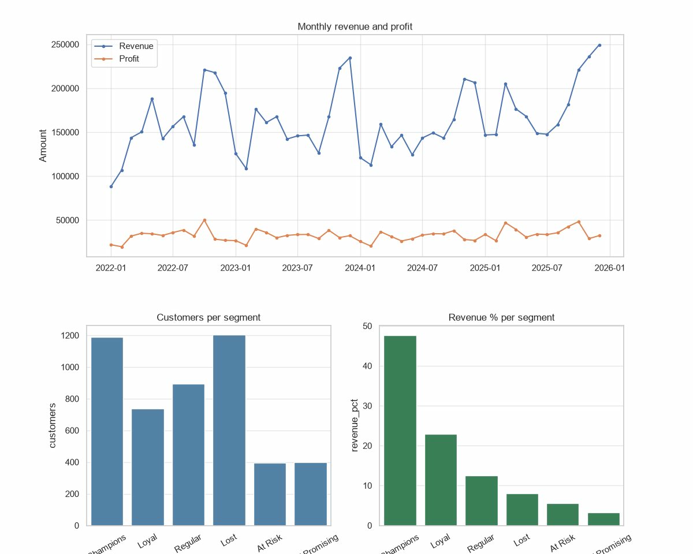
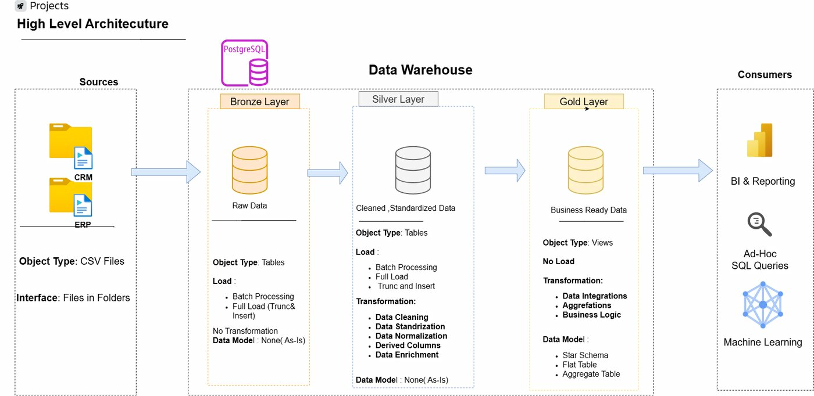
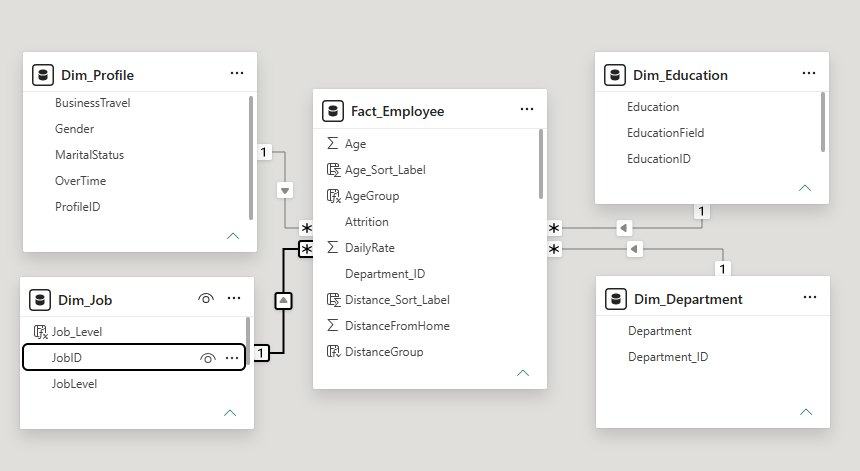
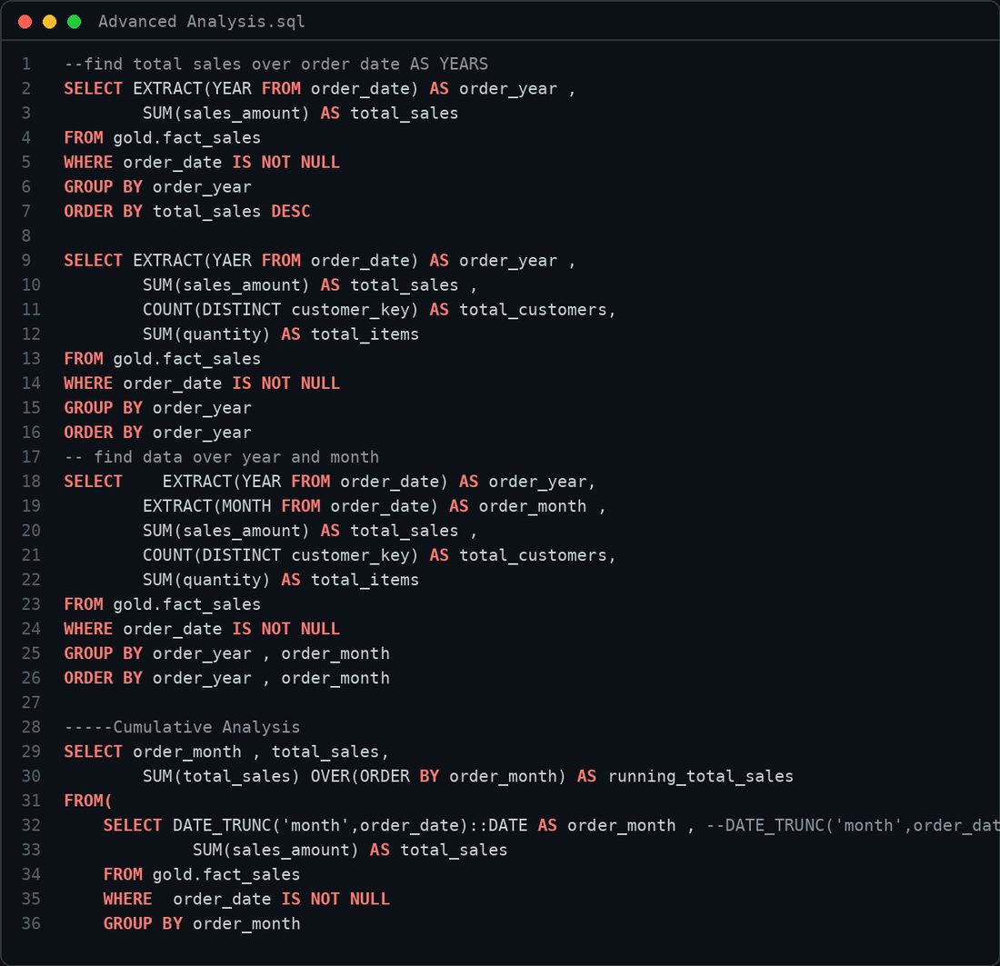
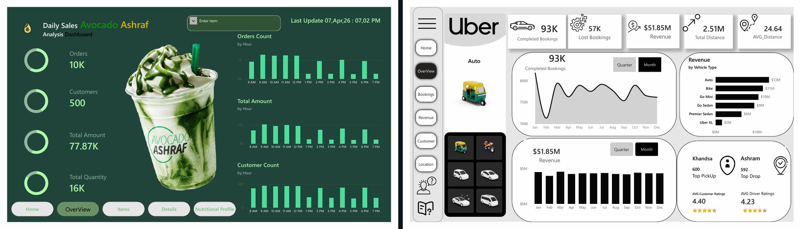

Mohamed Abdo Mahmoud
I turn messy data into answers the business can use.
I'm a data analyst in Cairo, currently at Nosoq Pharma. Most of my day is SQL, Python and Power BI: pulling data from wherever it lives, cleaning it up, and shipping dashboards and reports that people actually open.
What I work with
BI & Visualization
Programming
Databases & Modeling
Analysis & Tools
Where I work
Junior Data Analyst — Nosoq Pharma
Jun 2026 – Present- Pull data together from sheets, CSV exports and database servers, and clean it until it's ready to analyze.
- Built a Power BI dashboard with 8 KPIs and 4 interactive views for sales trends, order volume and product performance.
- Break sales down by product, store and time period to see where revenue and demand really come from.
- Put together KPI reports on attendance, working hours and productivity that the team tracks orders and revenue with.
Selected work
Real projects, with the actual output on the card: dashboards, models and code straight from the repos. Each one links to the source on GitHub.

Sales Analytics Pipeline
18K retail transactions across 6 countries and 12 stores, taken from raw CSV files to answers. I built a bronze-silver-gold pipeline in PostgreSQL with automated load procedures and a star schema, then used it to answer the questions a sales manager would actually ask.
- Revenue, profit and margin tracked month by month over 4 years
- Customers segmented with RFM: Champions, Loyal, At Risk and more
- Return rate broken down by product category and return reason
- 8 business questions answered in SQL, with EDA charts in Python

Data Warehouse — ERP & CRM
Sales data was sitting in two separate systems, ERP and CRM, as 6 CSV files. I designed a PostgreSQL warehouse that loads them raw into bronze, cleans and standardizes everything in silver, and serves a business-ready star schema in gold.
- Bronze, silver and gold layers with documented load scripts
- Data quality checks before anything reaches the gold layer
- Gold star schema: customer and product dimensions around a sales fact

HR Attrition Dashboard
HR data for 1,470 employees, modeled as a star schema in Power BI. Instead of only showing who already left, I built a composite Risk Score from six attrition drivers, so HR can see who might leave next and act early.
- Attrition rate, income gaps and satisfaction indices as DAX measures
- IQR outlier detection to keep the numbers honest
- Risk scoring that turns the dashboard into a retention to-do list

Customer & Product SQL Analysis
A set of SQL analyses on customer and product data: exploratory work first, then reusable report queries that roll the numbers up the way the business asks for them.
- Yearly and monthly sales trends with running totals
- Customer and product report queries, ready to refresh

Juice Shop & Uber Rides Dashboards
Two Power BI projects scoped from written business requirements: cleaned raw datasets, designed the data models and KPIs, and built multi-page interactive dashboards. One tracks a juice shop's daily sales against targets; the other follows Uber bookings, revenue and lost rides.
- Juice shop: 10K orders, 500 customers and 77.9K in sales, with clear 9 AM–12 PM and 4–6 PM peaks
- Uber: 93K completed bookings and $51.85M revenue, but also 57K lost bookings with the reasons broken out
- Auto is the top-earning vehicle type at $13M, ahead of Bike at $11M
Excel Analysis Projects
Three Excel projects with the full workflow in Power Query and Power Pivot: an ads campaign performance dashboard, plus sales analysis for a coffee shop and a bike store, each delivered with written findings.
- Ads: $2.5M spend, 4.85M impressions and a 4.16% CTR across Google and Facebook
- Coffee shop: $698.8K from 149K transactions, and revenue doubled from January to June with an 8–10 AM peak
- Bike store: 48.1% overall purchase rate; middle-aged customers buy at 78%, the strongest segment by far
More on my GitHub: Python projects · IBM Capstone · all repositories
Certificates
B.Sc., Information Systems
Faculty of Computers and Information, Helwan University
June 2023 · Grade: Good
Arabic & English
Arabic: Native
English: Intermediate (B1), actively working toward C1
Let's talk
I'm open to Junior Data Analyst, BI Analyst, and Reporting Analyst roles in Egypt and the Gulf. The fastest way to reach me is email or LinkedIn.